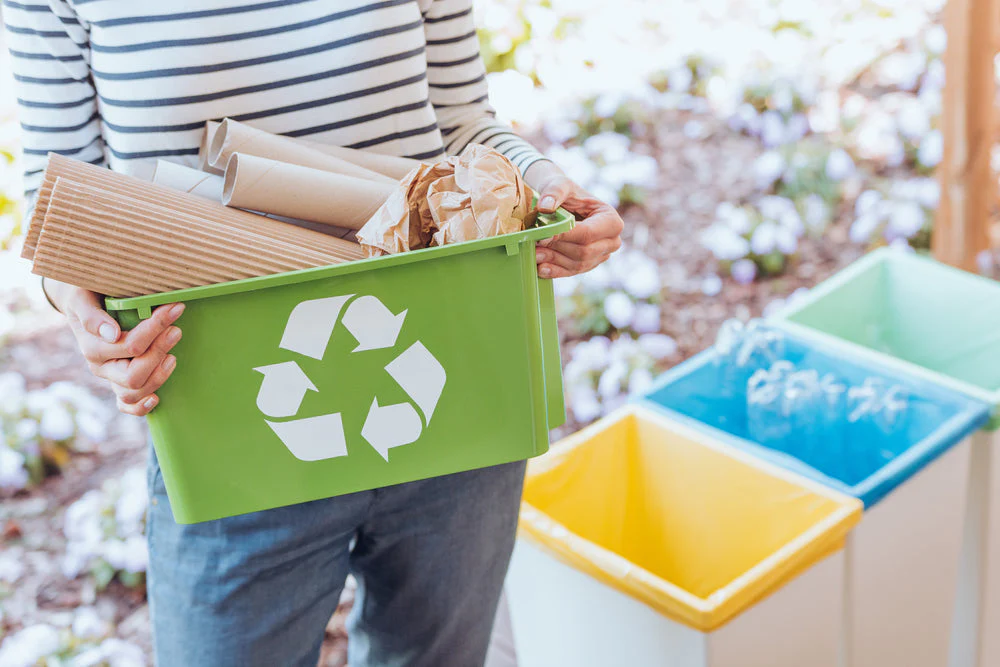
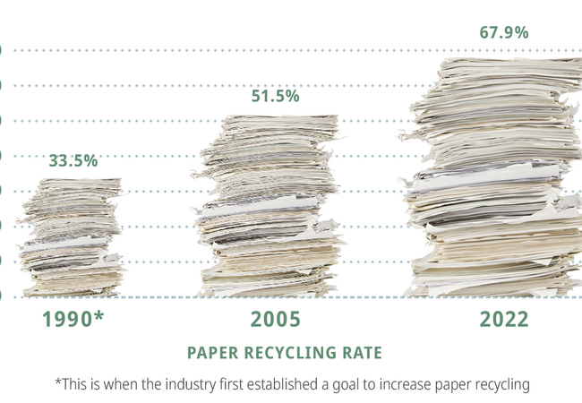
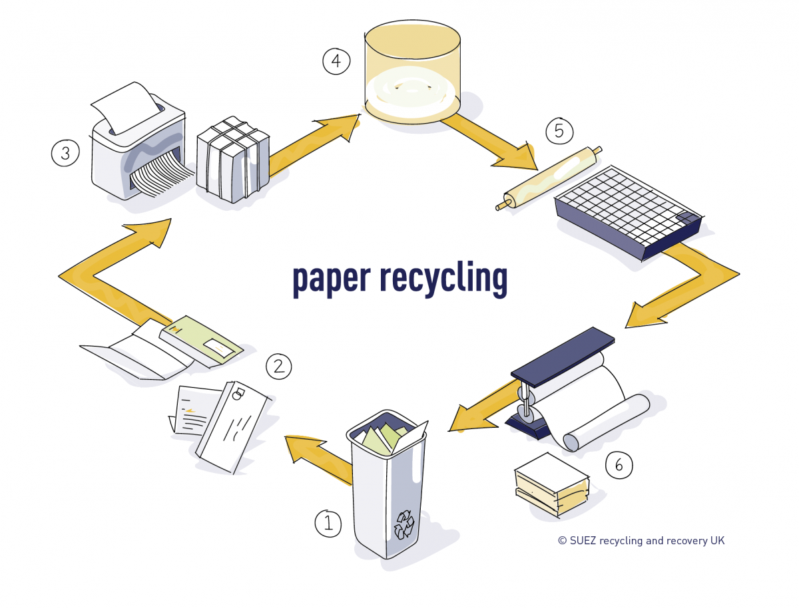

What to do with: Paper

There are various ways to dispose of paper, and it depends
on the material and volume of your item in question, as they may either be difficult for a recycling plant to
process or simply take up too much space in your own bin.
In general, if paper is food-soiled it should be composted
and not recycled. If your paper is clean, then adhere to the following guidelines from the City of Kirkland.
Normal Sheet Paper
Be sure to put these in your blue recycling cart and stack
them vertically to minimize space used in the bin. Examples include printer paper, shiny paper, window envelopes,
and magazines.

Cardboard
Cardboard boxes should be flattened out if smaller than 3
feet x 3 feet. If larger, it’s recommended that you cut the box up on opposing corners, as per official US
recycling guidelines. They also go in the blue bin.
Paperboard
Firstly, ensure that any food items (if applicable) are
removed from the container and that the container doesn’t have any liquids. Once done, flatten the box if
necessary and recycle in your blue bin. Examples include cracker boxes, cereal boxes, and dried pasta boxes.
Aseptic cartons
First ensure that the boxes are empty and contain no liquids
in them (i.e if it’s an ice cream container, make sure you don’t have any leftover ice cream soup in the
container). Throw away the lid and place the carton in the recycling bin. Examples include milk cartons and
soup/broth boxes.

Outside Kirkland?
If you live in a city other than Kirkland, these guidelines
should still apply with very few exceptions since paper is recyclable nearly everywhere.